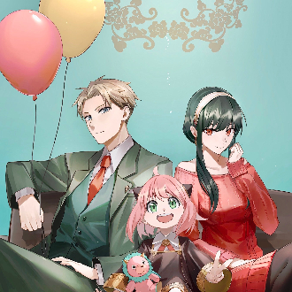
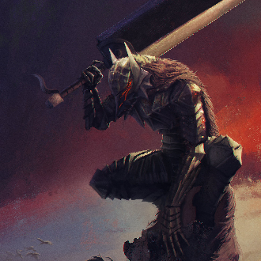
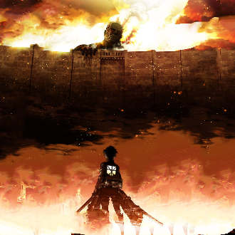

-
Spy X Family
Descrição
Spy X Family é uma série de mangá shōnen japonesa escrita e ilustrada por Tatsuya Endo. A história segue a vida de Twilight, um espião que precisa "formar uma família" de forma repentina para executar uma missão. Em resumo, Spy x Family se mostra como uma das melhores obras de humor em publicação no Brasil e tem um inegável potencial de crescimento, com uma história que promete grandes emoções.
-
Berserk
Descrição
Berserk (ベルセルク) é uma série de mangá escrita e ilustrada por Kentaro Miura. Situada em um mundo de fantasia sombria medieval inspirado na Europa, a história gira em torno dos personagens Guts, um mercenário solitário, e Griffith, o líder de um bando de mercenários chamados de Bando do Falcão. Temas como isolamento, camaradagem, e a questão de se a humanidade é fundamentalmente boa ou má permeiam a história, enquanto ela explora o melhor e o pior da natureza humana. Tanto o mangá como as animações são conhecidos por sua violência pesada.
-
Solo Leveling

Descrição
Um grande fenômeno um dia aconteceu, portais desconhecidos surgiram ligando o mundo que conhecemos a uma realidade totalmente extraordinária de monstros e seres fantasiosos, cujo único objetivo era matar humanos. Em resposta a esse novo perigo, surgiram os “Caçadores”, humanos que foram “despertados” e ganharam poderes capazes de bater de frente com essas criaturas. Dentre eles, há um conhecido por ser “a pior arma da humanidade”, Sung Jin-woo. Mas sua sorte irá mudar quando uma incursão que deveria ser fácil se torna um verdadeiro pesadelo.
-
Shingeki no Kyojin
Descrição
Eren Jaeger jurou eliminar todos os Titãs, mas em uma batalha desesperada ele se torna aquilo que mais odeia. Com seus novos poderes, ele luta pela liberdade da humanidade, combatendo os monstros que ameaçam seu lar. Mesmo depois de derrotar a Titã Fêmea, Eren não consegue descansar - uma horda de Titãs se aproximam da Muralha Rose e a batalha em nome da humanidade continua!